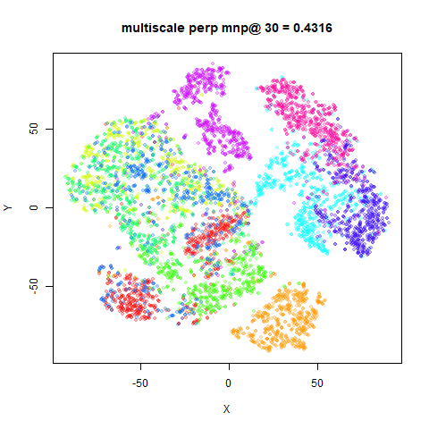
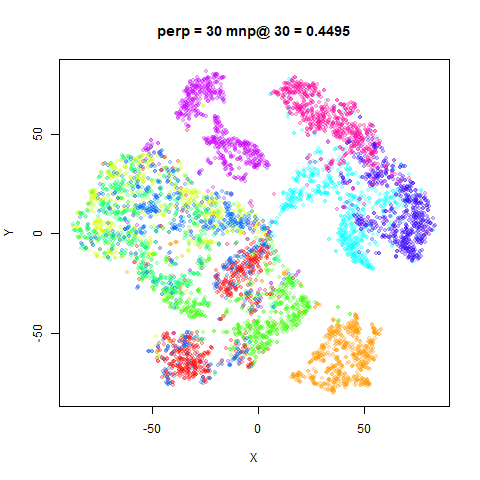

This article retains its original experiments and examples. For current package usage, see the usage guide.
There have been a series of papers on multiscale approaches to avoid having to choose a fixed perplexity value. First there was multiscale SNE, then multiscale JSE, and most recently multiscale t-SNE.
The first two papers describe a fairly complex approach to using multiple perplexities: in the high-dimension space, multiple probabilities, P, are calculated with different perplexity values and the average is used. But not all probabilities are used initially: just the probability with the largest perplexity. As the initialization proceeds, P matrices associated with smaller perplexities are introduced into the average. In the low-dimension space, averages of multiple probability matrices are also used, relying on the output kernel having a precision parameter which can be adjusted with reasoning analogously to the perplexity.
In the third paper, however, there are two simplifications: for the high-dimension space, all the probabilities are used in the average immediately, and in the low-dimension space, the standard t-SNE Student-t kernel is used, which doesn’t have an adjustable parameter (although it can be finessed into having one), so there are no multiple probabilities or averaging to deal with.
This simplification of implementation has motivated me to implemented
it into smallvis, and it can be accessed by using
perplexity = "multiscale". Like using the intrinsic dimensionality perplexity approach, the
default is to use perplexities in increasing powers of 2 from 8 to 128
(which covers most practical uses), but you can provide you own list of
perplexities by passing a list, with "multiscale" as the
first element, and a vector perplexities as the second element, e.g.
perplexity = list("multiscale", c(5, 50, 500)).
My main concern with this approach is that using an average probability like this isn’t much different from using a single probability that’s close to the average of the perplexities used, although the authors of the multiscale t-SNE paper note that the tails are a little fatter than a single Gaussian.
Datasets
See the Datasets page.
Settings
We shall use unexceptional settings for t-SNE with small datasets, except initializing with my usual favored method of scaled PCA. An example setting is:
iris_ms <- smallvis(
iris,
perplexity = "multiscale",
Y_init = "spca",
eta = 100,
exaggeration_factor = 4,
stop_lying_iter = 100
)For comparison, we shall use the same settings but with a single perplexity of 30:
iris_p30 <- smallvis(
iris,
perplexity = 30,
Y_init = "spca",
eta = 100,
exaggeration_factor = 4,
stop_lying_iter = 100
)Why did I choose a perplexity of 30 to compare with? First, using
standard single-perplexity t-SNE I looked at whether you can reliably
get back to an “effective perplexity” for the input probabilities after
they have been normalized and symmetrized, by row-normalizing the input
matrix and then calculating the median perplexity across each
probability distribution. For a variety of datasets and perplexity
values, the answer is you pretty much can. In general the reported
median perplexity is inflated by a few units, but I can live with that.
For the multiscale probabilities I then carried out the same
row-normalization and looked at the median perplexity for the datasets
considered here (smallvis will report this an “effective
perplexity” if you set verbose = TRUE). I tabulate the
effective perplexities in the “Results” section and as we will see
below, a perplexity of 30 is a reasonable guess for a comparison.
Evaluation
Apart from visualizing the results, the mean neighbor preservation of
the 30 closest neighbors, in line with the perplexity used
in the comparison plots is used to provide a rough quantification of the
quality of the result. On the plots, this is labelled as
mnp@30. This is not fair on the multiscale t-SNE results
because there’s no reason to believe they are focussed on preserving
exactly 30 neighbors, so don’t take it too seriously. A metric like the
RNX AUC curve used in the multiscale t-SNE paper would probably be
better.
Results
The multiscale t-SNE plots are on the left, the standard t-SNE on the right.
fashion6k
 |
 |
As expected, the mean neighbor preservation values are slightly lower for multiscale t-SNE, but that’s not very important. Visually, the two sets of images are very similar. This doesn’t surprise me that much given how little an effect perplexity seems to have when you use a scaled PCA initialization.
Here is the table of effective perplexities for both methods over the datasets examined:
| Dataset | multiscale t-SNE | t-SNE perp = 30 |
|---|---|---|
| iris | 24.98 | 32.45 |
| s1k | 32.01 | 32.44 |
| oli | 28.47 | 31.08 |
| frey | 31.57 | 33.67 |
| coil20 | 28.27 | 30.96 |
| mnist6k | 33.17 | 36.53 |
| fashion6k | 35.84 | 36.89 |
As you can see, while there is a bit of deviation across the dataset, a perplexity of 30 seems in the right ballpark.
Conclusions
For the datasets studied here, I don’t see a big need for multiscale
t-SNE, although it doesn’t seem to produce bad results. At least with
the default settings in smallvis, it doesn’t produce
results wildly different from setting the perplexity to 30, but requires
a longer probability calibration time.